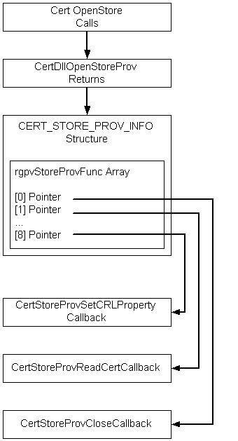
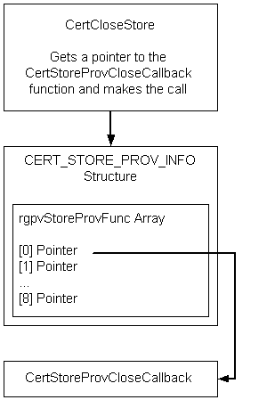

The certificate store is central to all certificate management operations. The functionality of the CertOpenStore function can be extended through the use of an installable (or registered) certificate-store-provider function. For an overview of how to install or register functions for use with the CryptoAPI, see OID Overview.
[!Note]
Custom certificate stores are not automatically migrated when performing automated deployments. To migrate custom certificate stores, you must create a manifest for migrating the custom stores and use the Windows User State Migration Tool (USMT).
Â
CertOpenStore opens an empty store in memory and calls the store provider function (if it is registered or installed) by using the object identifier (OID) that was passed in the lpszStoreProvider parameter. For a list of the predefined provider types that are supplied with the CryptoAPI, see CertOpenStore.
The store provider function copies its certificates and certificate revocation lists (CRLs) to the in-memory store specified by the hCertStore handle passed to it. The new store provider function can use any of the CryptoAPI certificate store functions, such as, CertAddCertificateContextToStore or CertAddSerializedElementToStore, to add its certificates and CRLs to the in-memory store. In addition, the store-provider function optionally returns values for all of the data members of the CERT_STORE_PROV_INFO structure. The function only needs to update this structure if it supports additional callback functions. For example, if the store was to be a read-only store, the support of other callback functions probably would not be needed. For details and prototypes of the possible callback functions, see Certificate Store Provider Callback Functions.
The per user TrustedPeople store is restricted to predefined physical stores. You cannot extend the per user TrustedPeople store. However, you can extend the local machine TrustedPeople store.
Windows XP and Windows Server 2003: The per user TrustedPeople store is not restricted to predefined physical stores.
One of the data members of the CERT_STORE_PROV_INFO structure is the rgpvStoreProvFunc array. If the store provider function needs to support one or more of the callback functions, it must provide pointers for this array. These pointers must point to the callback functions that are to be used for other certificate-store activities (such as closing the store). The following illustration shows the flow of this process.

As shown in the following illustration, after the store has been opened, other CryptoAPI functions (such as CertCloseStore) use the array of pointers to access the callback functions that perform the intended task. The definition of the CERT_STORE_PROV_INFO structure and the prototypes of the default callback functions that are supplied with the CryptoAPI are shown in Certificate Store Provider Callback Functions.

The store APIs allow a store provider to maintain the certificates, CRLs, and certificate trust lists (CTLs) outside the cache of the store (for example, an external database of certificates, such as provided by the Microsoft Certificate Server Database).
CertOpenStore dispatches through the pszStoreProvider parameter to the appropriate CertDllOpenStoreProv installable provider function. The provider returns information in the pStoreProvInfo parameter that points to a CERT_STORE_PROV_INFO structure. The CERT_STORE_PROV_INFO structure contains a dwStoreProvFlags member. The CERT_STORE_PROV_EXTERNAL_FLAG flag was added to allow the provider to indicate that the certificates, CRLs, and CTLs are external to the cache of the store.
CertDllOpenStoreProv returns an array of callback functions. A provider can implement the following callback functions:
On calls to the WRITE_CERT, WRITE_CRL, and WRITE_CTL callback functions when the CERT_STORE_PROV_WRITE_ADD_FLAG is set, the upper 16 bits of the dwFlags parameter contains the dwAddDisposition value. To support external stores, a provider can implement the following callback functions:
The certificate callback functions have the following signatures:
typedef struct _CERT_STORE_PROV_FIND_INFO {
DWORD cbSize;
DWORD dwMsgAndCertEncodingType;
DWORD dwFindFlags;
DWORD dwFindType;
const void *pvFindPara;
} CERT_STORE_PROV_FIND_INFO, *PCERT_STORE_PROV_FIND_INFO;
typedef const CERT_STORE_PROV_FIND_INFO CCERT_STORE_PROV_FIND_INFO,
*PCCERT_STORE_PROV_FIND_INFO;
typedef BOOL (WINAPI *PFN_CERT_STORE_PROV_FIND_CERT)(
IN HCERTSTOREPROV hStoreProv,
IN PCCERT_STORE_PROV_FIND_INFO pFindInfo,
IN PCCERT_CONTEXT pPrevCertContext,
IN DWORD dwFlags,
IN OUT void **ppvStoreProvFindInfo,
OUT PCCERT_CONTEXT *ppProvCertContext
);
typedef BOOL (WINAPI *PFN_CERT_STORE_PROV_FREE_FIND_CERT)(
IN HCERTSTOREPROV hStoreProv,
IN PCCERT_CONTEXT pCertContext,
IN void *pvStoreProvFindInfo,
IN DWORD dwFlags
);
typedef BOOL (WINAPI *PFN_CERT_STORE_PROV_GET_CERT_PROPERTY)(
IN HCERTSTOREPROV hStoreProv,
IN PCCERT_CONTEXT pCertContext,
IN DWORD dwPropId,
IN DWORD dwFlags,
OUT void *pvData,
IN OUT DWORD *pcbData
);
The signatures for the CRL and CTL callback functions are identical to the above with the pointer to the CERT_CONTEXT replaced with a pointer to a CRL_CONTEXT or CTL_CONTEXT.
The FIND_CERT callback is called when the store APIs enumerate, find, or add certificates. pPrevCertContext and ppvStoreProvFindInfo are set to NULL to initiate a new FIND. The returned ppvStoreProvFindInfo is passed back on the next find at which time it may be freed by the provider. The provider may set all, some, or none of the certificate properties. The provider has the option to defer until the GET_CERT_PROPERTY callback is called. It is recommended for providers to set as many properties as possible to allow copying to another store.
The following certificate find types are supported in CertFindCertificateInStore:
The FIND_CERT callback is called for each of the above find types. The parameters passed to CertFindCertificateInStore are copied directly to the CERT_STORE_PROV_FIND_INFO structure before the FIND_CERT callback is called. For details about the field values for the different find types of the CERT_STORE_PROV_FIND_INFO structure, see CertFindCertificateInStore.
The following certificate find types support the CertGetSubjectCertificateFromStore and CertGetIssuerCertificateFromStore APIs and help determine whether the certificate already exists in the store before adding:
For CERT_FIND_SUBJECT_CERT, the pvFindPara parameter points to a CERT_INFO structure that contains the Issuer and SerialNumber of the subject. For CERT_FIND_ISSUER_OF, pvFindPara points to a CERT_CONTEXT structure, of the subject. For CERT_FIND_EXISTING, pvFindPara points to a CERT_CONTEXT of the certificate to check for its existence in the store.
The FREE_FIND_CERT callback is called when the certificate returned by the FIND_CERT callback was not released by being used in a subsequent next FIND_CERT, thus having its reference count decremented to zero, or by being released by a call to CertCloseStore. Before the CLOSE callback is called, all certificates returned by the FIND_CERT callback should be released to the provider by being passed to a call to the FIND_CERT callback or a call to the FREE_FIND_CERT callback. The same applies to the CRL and CTL callbacks.
The GET_CERT_PROPERTY callback is called by CertGetCertificateContextProperty if it cannot find the specified property for the pCertContext parameter. The same is true for GET_CRL_PROPERTY and GET_CTL_PROPERTY.
The FIND_CRL callback is called when the store APIs enumerate or get CRLs and before adding a CRL. The following CRL find types will be defined:
For CRL_FIND_ISSUED_BY, pvFindPara is a pointer to a CERT_CONTEXT of the CRL issuer. For CRL_FIND_EXISTING, pvFindPara is a pointer to a CRL_CONTEXT of the CRL to determine whether it already exists in the store.
The FIND_CTL callback is called when the store APIs enumerate or find CTLs. The following CTL find types are supported in CertFindCTLInStore:
The FIND_CTL callback is called for each of the above find types. The parameters passed to CertFindCTLInStore are copied directly to the CERT_STORE_PROV_FIND_INFO structure before the FIND_CTL callback is called. For details about the field values for the different find types of the CERT_STORE_PROV_FIND_INFO structure, see CertFindCTLInStore.
The CTL_FIND_EXISTING CTL find type helps determine whether the CTL already exists in the store before doing a CTL add.
For CTL_FIND_EXISTING, pvFindPara is a pointer to the CTL_CONTEXT structure of the CTL to determine whether it already exists in the store.
Â
Â